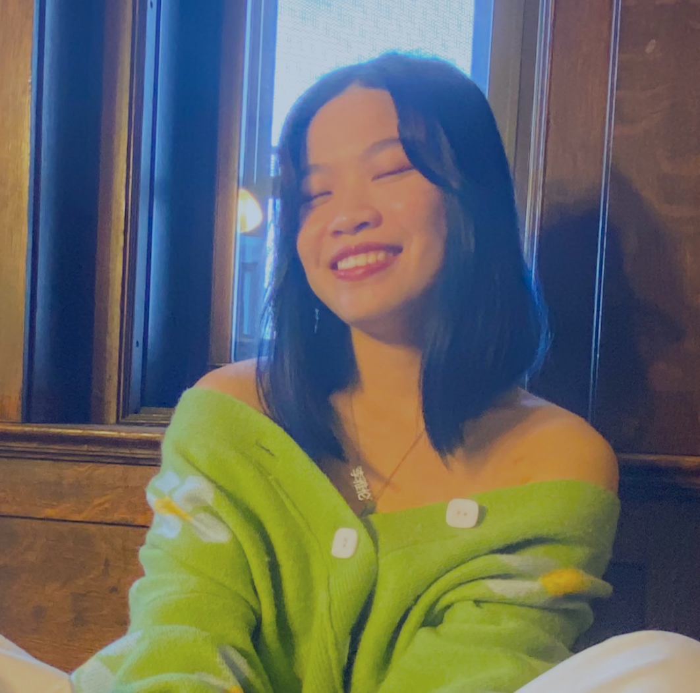

Selina Li
Selina is a junior majoring in Media Science. She is interested in user-experience, user-centered design, and storytelling. She grew up in the Boston Chinatown neighborhood and has fond memories eating out, playing, and connecting with people within the community.
Elyana Alajmi

Elyana is a Public Relations graduate student with a background in Marketing and Finance. She is interested in deepening her understanding of businesses and the client/investor relationship. She’s been in Boston for almost a decade and considers it her home.